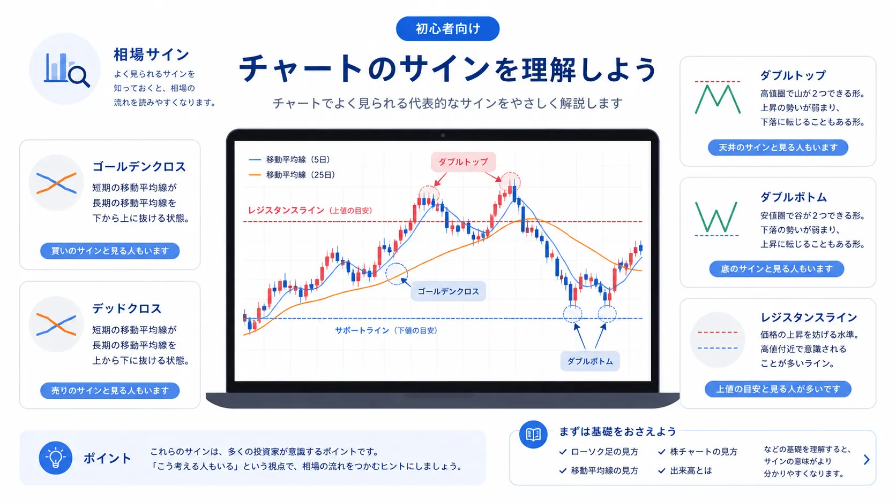
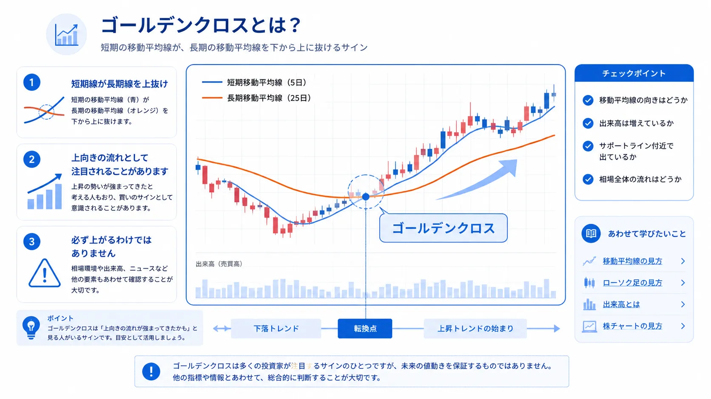
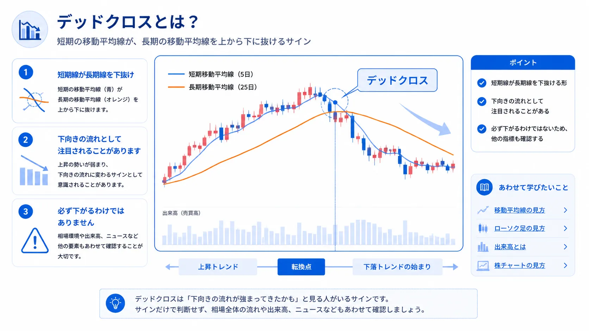
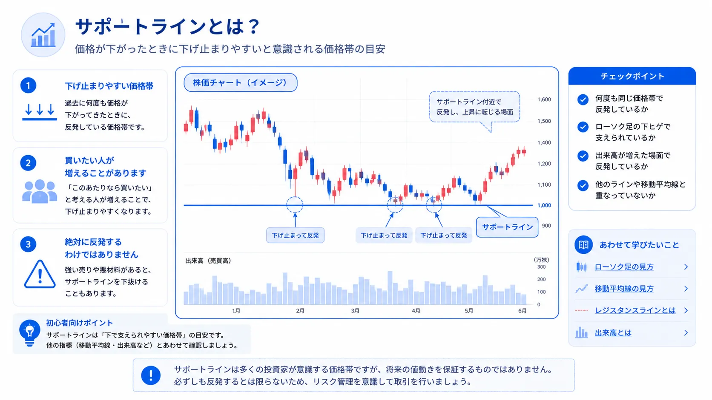
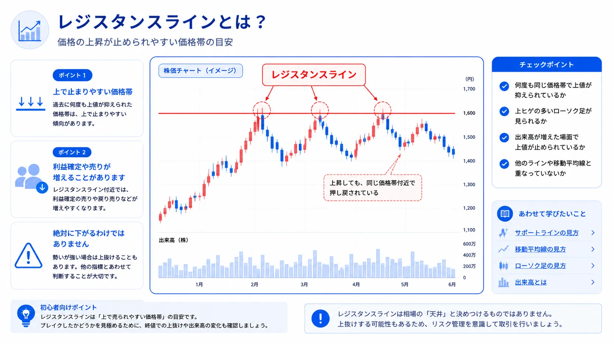
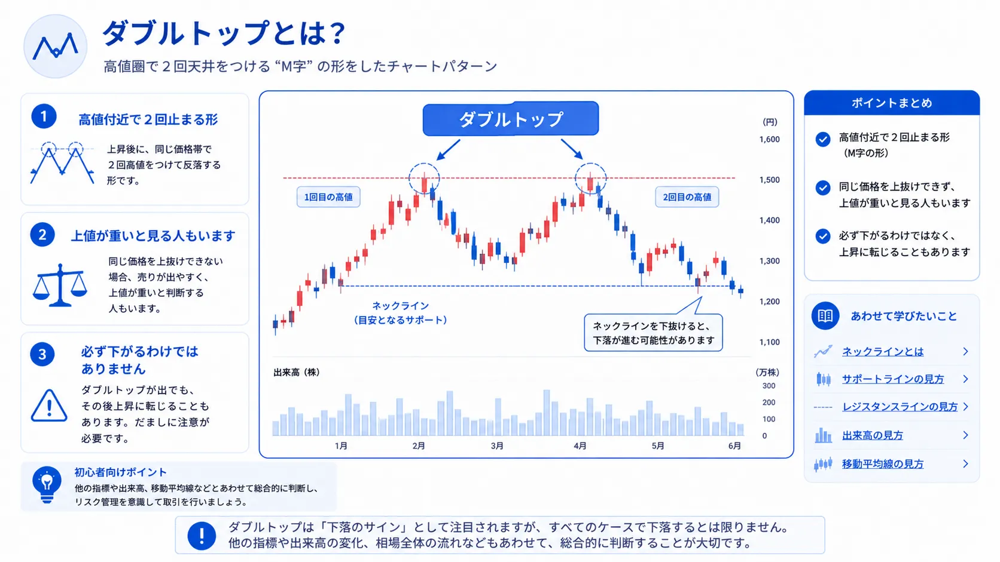
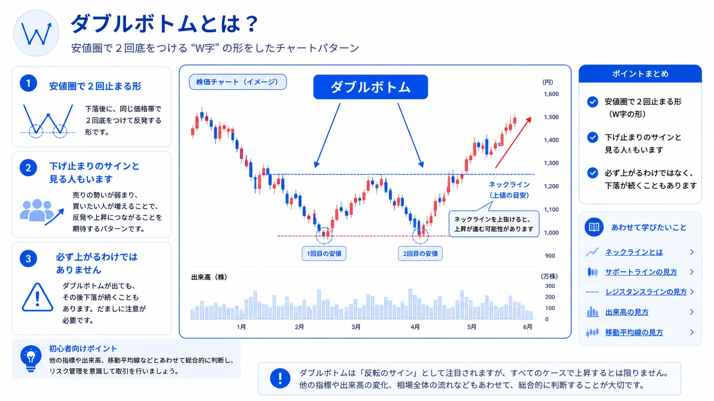

チャートのサインを初心者向けに解説｜ゴールデンクロス・サポートライン・ダブルトップの見方
チャートのサインとは？まずは意味をやさしく整理

- チャートのサインは、相場の流れや価格帯を読むための目安です
- ゴールデンクロスやサポートラインなど、よく注目される形があります
- サインが出たからといって、必ず上がる・下がるわけではありません
- 初心者は、代表的なサインだけを少しずつ覚えれば大丈夫です
株やFXのチャートを見ていると、ゴールデンクロス、デッドクロス、サポートライン、ダブルトップなどの言葉を見かけることがあります。
これらは、チャートの中で多くの人が注目しやすい形や価格帯を表す言葉です。
ただし、チャートのサインは「これが出たら必ず勝てる」というものではありません。
大切なのは、サインを必勝法として覚えることではなく、相場参加者がどのあたりを意識しているのかを読み取るための材料として理解することです。
全部を一気に覚えなくても大丈夫
チャート分析には多くの種類がありますが、初心者が最初からすべてを覚える必要はありません。
まずは、よく使われる代表的なサインだけを知っておくと、チャート画面を見たときに「何を見ているのか」が少しずつ分かりやすくなります。
この記事では、初心者が最初に覚えやすいチャートサインを、図解と短い説明で整理します。
ゴールデンクロスとは？上向きの流れとして注目されることがあるサイン

- 短期の移動平均線が、長期の移動平均線を下から上に抜ける形です
- 上向きの流れが強まってきたと見る人もいます
- ただし、出たあとに必ず上がるわけではありません
- 出来高や相場全体の流れとあわせて見ることが大切です
ゴールデンクロスとは、短期の移動平均線が、長期の移動平均線を下から上に抜ける形です。
短期の線が上向きになり、長期の線を上回るため、相場の流れが上向きに変わってきたのではないかと考える人もいます。
そのため、株やFXのチャートでは、比較的よく注目されるサインのひとつです。
ただし、ゴールデンクロスが出たからといって、必ず価格が上がるわけではありません。短期的な上下で一時的にクロスするだけの場合もあります。
初心者向けポイント
ゴールデンクロスは、「短期の流れが長期の流れより強くなってきたかも」と見る人がいるサインです。
移動平均線の基本を先に理解しておくと、より分かりやすくなります。
移動平均線の見方もあわせて確認しておくと整理しやすいです。
デッドクロスとは？下向きの流れとして注目されることがあるサイン

- 短期の移動平均線が、長期の移動平均線を上から下に抜ける形です
- 下向きの流れが意識されることがあります
- 弱い相場に見えることがありますが、必ず下がるとは限りません
- 大きなトレンドやニュースもあわせて見る必要があります
デッドクロスとは、短期の移動平均線が、長期の移動平均線を上から下に抜ける形です。
ゴールデンクロスとは反対に、短期の流れが弱くなってきたように見えるため、下向きのサインとして注目されることがあります。
たとえば、上昇していたチャートでデッドクロスが出ると、「勢いが弱まってきたのではないか」と考える人もいます。
ただし、デッドクロスが出たからといって、すぐに大きく下がるとは限りません。横ばい相場では、何度もクロスが出て判断しにくくなることもあります。
覚え方
- ゴールデンクロス：短期線が上に抜ける
- デッドクロス：短期線が下に抜ける
- どちらも「絶対」ではなく、流れを見るための目安
※クロス系のサインは、移動平均線の期間設定や相場環境によって見え方が変わります。
サポートラインとは？下げ止まりやすいと意識される価格帯

- サポートラインは、価格が下がったときに止まりやすいと見られる価格帯です
- 日本語では支持線と呼ばれることもあります
- 「このあたりなら買いたい」と考える人が増えることがあります
- ラインを割り込むと、見方が変わる場合もあります
サポートラインとは、価格が下がったときに下げ止まりやすいと意識される価格帯です。
たとえば、過去に何度も同じ価格帯で反発している場合、そのあたりをサポートラインとして見る人がいます。
「この価格まで下がったら買いたい」と考える人が増えると、価格が反発しやすく見えることがあります。
ただし、サポートラインは絶対に止まる場所ではありません。大きな悪材料や相場全体の下落があると、ラインを下に抜けることもあります。
初心者向けポイント
サポートラインは、「下で買いたい人が意識しやすい価格帯」と考えると分かりやすいです。
ローソク足の下ヒゲや反発の形とあわせて見ると、チャートの雰囲気をつかみやすくなります。
ローソク足の見方も確認しておくと理解しやすいです。
レジスタンスラインとは？上で押し戻されやすいと意識される価格帯

- レジスタンスラインは、価格が上がったときに押し戻されやすいと見られる価格帯です
- 日本語では抵抗線と呼ばれることもあります
- 利益確定や売りが増えやすい水準として見られることがあります
- 上に抜けると、相場の見方が変わることもあります
レジスタンスラインとは、価格が上がったときに押し戻されやすいと意識される価格帯です。
過去に何度も同じ価格帯で上昇が止まっている場合、そのあたりをレジスタンスラインとして見る人がいます。
「この価格まで上がったら売りたい」「利益を確定したい」と考える人が増えると、上値が重く見えることがあります。
ただし、強い材料や買いの勢いがある場合は、レジスタンスラインを上に抜けることもあります。ラインは目安であり、絶対ではありません。
サポートとレジスタンスの違い
- サポートライン：下で支えられやすいと見られる価格帯
- レジスタンスライン：上で押し戻されやすいと見られる価格帯
- どちらも、多くの人が意識しやすい価格帯の目安
ダブルトップとは？高値付近で2回止まる形

- ダブルトップは、チャート上に2つの山ができる形です
- 同じような高値で2回押し戻されると、上値が重いと見る人もいます
- 上昇の勢いが弱まってきたサインとして注目されることがあります
- 形だけで下落を決めつけるのは注意が必要です
ダブルトップとは、チャート上で高値付近に2つの山ができる形です。
一度上がって押し戻され、もう一度同じような価格帯まで上がったものの、再び押し戻されるような動きです。
この形になると、「その価格帯では売りたい人が多いのではないか」「上値が重くなっているのではないか」と考える人もいます。
ただし、ダブルトップに見えても、その後に高値を超えて上昇することもあります。形だけで判断するのではなく、出来高や相場全体の流れも確認することが大切です。
初心者向けポイント
ダブルトップは、「同じあたりで2回押し戻された形」と考えると分かりやすいです。
レジスタンスラインと一緒に見ると、どの価格帯が意識されているのかを整理しやすくなります。
ダブルボトムとは？安値付近で2回止まる形

- ダブルボトムは、チャート上に2つの谷ができる形です
- 同じような安値で2回反発すると、下げ止まりを意識する人もいます
- 売りの勢いが弱まってきたと見られることがあります
- 必ず上昇する形ではなく、目安として見ることが大切です
ダブルボトムとは、チャート上で安値付近に2つの谷ができる形です。
一度下がって反発し、もう一度同じような価格帯まで下がったものの、再び反発するような動きです。
この形になると、「その価格帯では買いたい人がいるのではないか」「下げ止まりを意識する人が増えているのではないか」と見る人もいます。
ただし、ダブルボトムに見えても、再び下に抜けることはあります。サポートラインや出来高、ニュースなどもあわせて確認しましょう。
初心者向けポイント
ダブルボトムは、「同じあたりで2回支えられた形」と考えると分かりやすいです。
サポートラインと組み合わせると、下値の意識されやすさを確認しやすくなります。
初心者が最初に覚えたいチャートサインまとめ
- ゴールデンクロスは、上向きの流れとして注目されることがあります
- デッドクロスは、下向きの流れとして注目されることがあります
- サポートラインは、下で支えられやすい価格帯の目安です
- レジスタンスラインは、上で押し戻されやすい価格帯の目安です
- ダブルトップ・ダブルボトムは、相場の迷いや転換を意識する人がいる形です
| サイン | どんな形？ | よく見られる意味 | 初心者向けの覚え方 |
|---|---|---|---|
| ゴールデンクロス | 短期線が長期線を上抜け | 上向きの流れとして注目されることがある | 短期の勢いが強くなったかも |
| デッドクロス | 短期線が長期線を下抜け | 下向きの流れとして注目されることがある | 短期の勢いが弱くなったかも |
| サポートライン | 下で止まりやすい価格帯 | 買いが入りやすい水準として見られる | 下で支えられやすい場所 |
| レジスタンスライン | 上で止まりやすい価格帯 | 売りが出やすい水準として見られる | 上で押し戻されやすい場所 |
| ダブルトップ | 高値付近に山が2つ | 上値が重いと見る人もいる | 同じ上で2回止まった形 |
| ダブルボトム | 安値付近に谷が2つ | 下げ止まりを意識する人もいる | 同じ下で2回支えられた形 |
チャートのサインは、名前だけを見ると難しく感じるかもしれません。
しかし、ひとつずつ見ていくと、ほとんどは買う人と売る人がどの価格帯を意識しているのかを表す考え方です。
最初は、形の名前を完璧に覚えるよりも、「上で押し戻された」「下で支えられた」「短期の流れが変わってきたかも」といった相場の雰囲気として読むところから始めると分かりやすいです。
チャートサインを見るときに初心者が注意したいこと
- サインだけで売買を決めつけない
- 「必ず上がる」「必ず下がる」と考えない
- ローソク足、移動平均線、出来高、ニュースもあわせて見る
- 短期チャートだけでなく、少し広い時間軸でも確認する
- 最初はサインを探すより、意味を理解することを優先する
チャートサインは便利ですが、未来を確実に当てるものではありません。
きれいなゴールデンクロスが出ても、その後に下がることはあります。サポートラインに見えた価格帯を、そのまま下に抜けることもあります。
そのため、チャートサインは売買を決めつけるものではなく、相場を整理するためのヒントとして使うことが大切です。
特に株の場合は、チャートだけでなく、企業業績、決算、ニュース、出来高などもあわせて確認しましょう。
最初はここだけ見ればOK
- 価格は上向きか、下向きか
- 移動平均線はどちら向きか
- 何度も止まっている価格帯はあるか
- 上で押し戻されているか、下で支えられているか
※チャートサインに絶対の正解はありません。まずは「意味がなんとなく分かる」状態を目指しましょう。
チャートのサインとあわせて読みたい関連記事

チャートサインを理解するには、ローソク足、移動平均線、出来高、チャート全体の見方もあわせて確認しておくと分かりやすくなります。
以下の関連記事も参考にしてみてください。
実際にチャートを見ながら学びたい方へ
チャートサインは、文章だけで覚えるよりも、実際のチャート画面を見ながら少しずつ確認すると理解しやすくなります。
初心者の場合は、画面が見やすく、銘柄検索やチャート確認をしやすい証券会社を選ぶと、学習もしやすくなります。


一般ユーザー目線の体験でおすすめの会社をご紹介

よくある質問（FAQ）

-
Q. チャートのサインとは何ですか？
チャートのサインとは、ゴールデンクロスやサポートラインなど、相場の流れや価格帯を読むときに注目される形や線のことです。ただし、将来の値動きを確実に当てるものではありません。 -
Q. ゴールデンクロスが出たら必ず上がりますか？
必ず上がるわけではありません。ゴールデンクロスは上向きの流れとして注目されることがありますが、相場環境や出来高、ニュースなどもあわせて確認することが大切です。 -
Q. サポートラインとは何ですか？
サポートラインとは、価格が下がったときに下げ止まりやすいと意識される価格帯の目安です。絶対に止まる場所ではなく、多くの人が意識しやすい水準として見られることがあります。 -
Q. ダブルトップとは何ですか？
ダブルトップとは、チャート上で高値付近に2つの山ができる形です。上値が重いと見る人もいますが、この形だけで下落を決めつけるのは注意が必要です。 -
Q. 初心者はどのチャートサインから覚えるべきですか？
初心者は、ゴールデンクロス、デッドクロス、サポートライン、レジスタンスライン、ダブルトップ、ダブルボトムのような代表的なサインから覚えると整理しやすいです。
ご利用にあたっての注意事項
本記事は情報提供を目的としており、投資の勧誘を目的としたものではありません。株式・ETF・投資信託・外国証券・FX・暗号資産等の取引は元本保証がなく、価格変動や為替変動等により損失が生じる場合があります。チャート分析にはさまざまな考え方があり、銘柄や相場環境、投資目的によって見方は異なります。チャートのサインは将来の値動きを保証するものではありません。取引開始前に、契約締結前交付書面や商品説明書、目論見書等を必ずご確認のうえ、ご自身の判断と責任でお取引ください。
最終更新日：2026-05-20